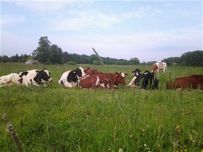

Nu har hösten anlänt, dock något varmare än normalt. Vi kan lägga sommaren 2018 bakom oss och fokusera framåt.
Men först vill jag med detta tacka er alla för det enorma stöd ni visat oss svenska bönder i sommar. Det gäller alla (med vissa undantag), handlare, kommuner, banker, restauranger, privatpersoner, grannar, nära och kära. Ingen nämnd, ingen glömd. Politikerna visade på lite vilja även de, även om det fortfarande inte ploppat in några krispengar på något konto så pratade de ju om det, och det är ju bra bara det.
Vi bönder skulle inte ha kommit igenom denna sommar utan ert stöd och engagemang, nu kämpar vi vidare.
Nu när hösten är här kan det kanske kännas som faran är över och vi ramlar in i gamla banor igen. Gör inte det, snälla. Vi bönder behöver er fortsättningsvis för tid och evighet, men framförallt, ni behöver oss.
Det kommer i vinter att bli brist på vissa livsmedel och priserna går upp. Det är ju egentligen bra, då maten är på tok för billig, men det är ju inte bra att det sker för att vi har en bristsituation i landet. Vi kommer att se att importen inte riktigt kommer att kunna hjälpa till då torkan slog hårt i stora delar av världen.
Vi måste nu verkligen se över vad vi kan göra för att säkra en livsmedelsförsörjning i händelse av en kris.
För det första så måste villkor, krav och regler ses över som fördyrar och krånglar till det för oss bönder att försöka producera mat åt er. Det måste fokuseras på att det är mat vi bönder producerar och inte att vi bedriver miljöfarlig verksamhet (ja, lantbruket klassas som det). Vi bönder måste känna att ni verkligen tror på oss.
Drivmedelssituationen måste också lösas. Vi bönder är otroligt beroende av drivmedel. Blir det strömlöst fungerar vår gård tills dieseltanken är tom, då stannar elverket. Är då även gränserna stängda så får vi börja skjuta kor (citat från en kollega). Även om det finns gårdar med solel så blir de dåligt försörjda vintertid, om det är då krisen slår till.
Sverige har goda förutsättningar att producera egna helt fossilfria drivmedel. Vi har biogas, etanol, HVO med tallolja, RME och så vidare, men då måste det komma företagsmässigt intressanta villkor för att produktion av detta skall sätta igång. Det räcker tyvärr inte bara med att chockhöja priserna på vanlig diesel, det gör snarare större skada än nytta då vi behöver något att köra på fram till en förändring.
Jag tror även på el som ”drivmedel”. Elen ska naturligtvis även den vara producerad i landet. Det ligger väldigt långt fram för oss bönder och åkerier, men det är ett alternativ. Fast då får det ju bli ett system som är ”krigsdugligt” och inte kan slås ut, för då står vi ju där med urladdad traktor.
När man börjar fundera över dessa frågor så blir det lite läskigt vad sårbara vi är i Sverige, men vi kan ändra på det. Vi bönder är taggade och ni alla visade god vilja i somras så låt oss hålla i detta så gör vi det här tillsammans. Svenskt lantbruk är precis lika viktigt som alla våra andra samhällsnödvändiga funktioner såsom räddningstjänsten, sjukhusen, polisen och försvaret. Utan mat fungerar inget.
Sist men inte minst vill jag tacka våra söner Nils och Albin för att de jobbade som djurens hjältar hela sommaren med att fara runt efter foder medan många av deras jämnåriga låg på stranden. Fler yngre förmågor som har viljan, passionen och drivet är även det av otroligt stor vikt för vår framtida försörjning. De gröna näringarna är framtiden, om ni vill och låter oss.
Anette Gustawson, Billinge Gård
www.norrteljetidning.se/debatt
nt.debatt@mittmedia.se
